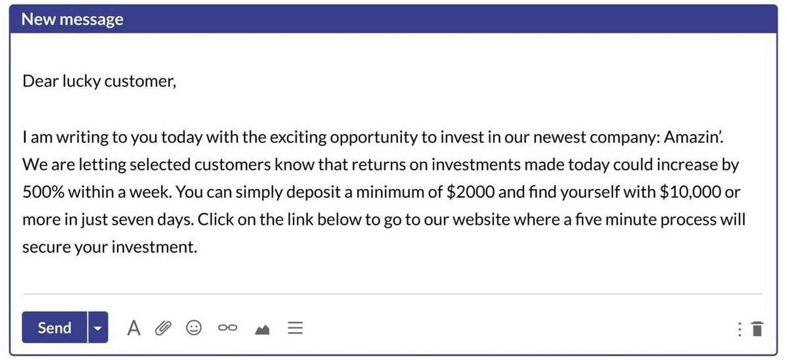

Anglais Lesson 2 · L3 S5
The language of deception
Arnaques par e-mail, SMS ou téléphone : la leçon fait parler de fraude en ligne, puis apprend à repérer les indices linguistiques qui trahissent un escroc. Elle passe par une vidéo sur le clonage de voix par IA, un sketch de scam baiting, un e-mail à écrire et une interview à jouer.
Objectifs
- Nommer les types d'arnaques et le vocabulaire de la fraude (scammer, fraudulent, to impersonate, bribery…).
- Former le bon mot à partir d'une racine : nom de personne, adjectif, adverbe, participe.
- Résumer une vidéo en 7 ou 8 phrases.
- Repérer et corriger les tournures maladroites d'un message frauduleux.
- Présenter une étude de cas et mener une interview.
Prérequis
- Lesson 1 : donner son avis, convaincre.
Note Ce que contient cette page
La fiche est reprise en entier. Tes réponses écrites n'y sont pas recopiées, sauf les mots de l'exercice de vocabulaire, qui sont justes. Les deux vidéos n'ont pas pu être regardées : ce qui en dépend est signalé.
Clickbait and scams: warm up fiche, p. 1, exercices 1–2
La leçon commence par des messages « piège à clics » à commenter, puis par une discussion sur les arnaques que l'on connaît.
Exercice 1 Read the clickbait messages
Read the clickbait messages and say where you can come across them (e.g. email, website ad, SMS). Describe how they make you feel.
À vérifier Les messages ne sont pas dans le fichier : sans doute projetés en séance.
Exercice 2 Discuss the questions
- What is a scam and what types of scams are you familiar with?
- Has anyone ever tried to scam you online in order to get money or something else from you? If so, what happened?
- What do you do to protect yourself from online fraud?
- In your opinion, are some age groups more vulnerable to online scams than others? Why?
- What other factors affect a person's likelihood of being deceived by such scams?
- What do you think “scam baiting” means?
Solution proposée
A scam is a dishonest scheme to trick people into giving money or personal information. Scam baiting means deliberately replying to scammers to waste their time, expose them or make fun of them.
Older people are often described as more vulnerable because they are less familiar with technology, but young people fall for scams too, especially fake job offers, online shopping and gaming scams. Other factors include stress, loneliness, urgency, trust in authority and lack of time.
Complément Les types d'arnaques
- clickbait
- un titre ou un message racoleur, fait pour attirer le clic
- phishing
- l'hameçonnage : un faux message qui imite une banque, un service, une administration, pour voler des identifiants
- smishing / vishing
- le même procédé par SMS / par appel vocal (voice phishing)
- spear phishing
- un hameçonnage ciblé, préparé pour une personne précise
- advance-fee fraud
- l'arnaque à l'avance de frais : payer un peu pour toucher une grosse somme promise (l'« arnaque nigériane », 419 scam)
- romance scam
- l'arnaque aux sentiments
- tech support scam
- le faux support technique
- identity theft
- l'usurpation d'identité
- to fall for a scam
- se faire avoir par une arnaque
Scamming and fraud vocabulary fiche, p. 1, exercice 3
L'exercice demande de mettre le mot entre parenthèses à la bonne forme : un nom de personne, un adjectif, un adverbe, un participe. C'est un exercice de formation des mots (word formation).
Exercice 3 Complete the sentences by using the correct form of the word in parentheses
- Once the fraud had been uncovered, the ______ (scam) disappeared, leaving behind a trail of unpaid bills and false identities.
- The firm was fined for its ______ (fraud) activities, which involved falsifying financial records.
- Many hackers use ______ (deceit) methods to steal personal data.
- He was arrested for ______ (impersonate) a police officer.
- The salesman used ______ (trick) to sell poor-quality products.
- The apparent investment opportunity was ______ (deceive) attractive, promising enormous returns with virtually no risk.
- The police are investigating the ______ (swindling) who sold counterfeit tickets to unsuspecting concertgoers.
- The elderly couple were so skillfully ______ (dupery) into disclosing their bank details that they remained unaware they had been deceived until several days later.
- The company was involved in ______ (bribe) when they paid officials to approve illegal projects.
Solution proposée
Ce sont les mots écrits sur ta fiche ; ils sont tous justes.
- scammer : la personne (suffixe -er) ; scammer double le m.
- fraudulent : adjectif devant le nom activities.
- deceitful : adjectif devant methods.
- impersonating : après une préposition (for), le verbe prend -ing.
- trickery : nom indénombrable, « la tromperie ».
- deceptively : adverbe qui modifie l'adjectif attractive.
- swindler : la personne.
- duped : participe passé d'un passif (were … duped into doing).
- bribery : nom de l'activité, « la corruption ».
| Verbe | Nom (chose) | Nom (personne) | Adjectif, adverbe |
|---|---|---|---|
| to scam | a scam | a scammer | — |
| to defraud | fraud | a fraudster | fraudulent, fraudulently |
| to deceive | deceit, deception | a deceiver | deceitful, deceptive, deceptively |
| to trick | a trick, trickery | a trickster | tricky |
| to swindle | a swindle | a swindler | — |
| to dupe | dupery | a dupe (la victime) | duped |
| to bribe | a bribe, bribery | — | bribable |
| to impersonate | impersonation | an impersonator | — |
| to counterfeit | a counterfeit | a counterfeiter | counterfeit (goods) |
Attention Ce qui piège
- Deceitful (malhonnête, qui ment) et deceptive (trompeur, qui donne une fausse impression) ne sont pas interchangeables : on dit deceptive packaging, a deceitful person.
- Fraud est le délit, a fraudster la personne ; a fraud désigne aussi, familièrement, un imposteur.
- La fiche donne (swindling) et (dupery) comme mots de départ alors que ce sont déjà des dérivés : la racine est le verbe to swindle, to dupe.
Viewing activity: AI voice scams fiche, p. 2, exercice 4
La vidéo de CBS News montre comment des escrocs imitent la voix d'un proche grâce à l'IA. Il faut en tirer un résumé.
Exercice 4 How phone scammers are using AI to imitate voices (CBS News)
Vidéo : youtube.com/watch?v=pJZYd_65xs4
Watch the video carefully and take notes on the key points. Then write a 7–8 sentence summary in your own words. Your summary should explain how the scam works, illustrate it with an example from the video, and mention the scale of the problem and ways of protecting yourself. Make sure your summary is clear, concise, and written in your own words.
Indice
Un plan en quatre temps, comme la consigne : le mécanisme (2 phrases), l'exemple de la vidéo (2 phrases), l'ampleur (1 ou 2 phrases), les protections (2 phrases).
Solution proposée
Modèle de structure, écrit sans avoir vu la vidéo : l'exemple et les chiffres sont à remplacer par ceux de la vidéo.
The video explains how criminals use artificial intelligence to clone the voice of someone you know. They only need a few seconds of audio, often taken from social media, to create a convincing copy. Then they call a relative, usually a parent or grandparent, pretending to be in trouble and asking for money urgently. In the video, [example: who was called, what the fake voice said, how much money was asked for]. This type of fraud is growing quickly because the tools are cheap and easy to use, and [figure from the video]. To protect yourself, you should hang up and call the person back on their usual number. Families can also agree on a secret code word to check that a call is genuine.
Complément Mots du clonage de voix
- voice cloning
- le clonage de voix
- a deepfake
- un hypertrucage : image, vidéo ou voix générée pour imiter une vraie personne
- to pose as / to pretend to be
- se faire passer pour
- a ransom
- une rançon ; a fake kidnapping, un faux enlèvement
- a safe word / code word
- un mot de passe convenu en famille
- to hang up / to call back
- raccrocher / rappeler
Scam baiting fiche, p. 2, exercice 5
La seconde vidéo montre l'humoriste James Veitch qui répond aux e-mails d'un escroc, « Solomon », qui lui propose de l'or. Il fait durer l'échange en poussant l'absurde toujours plus loin.
Vidéo : youtube.com/watch?v=_QdPW8JrYzQ
Exercice 5 a Watch the video up to 07:42. Then answer the questions below.
- How would you describe James's attitude towards the scammer and the situation?
- Identify three moments where James deliberately pushes the situation beyond what Solomon expects. What makes each moment absurd?
- James says, “I don't think what I'm doing is mean.” Do you agree? Why / Why not?
- Why does James eventually decide to end his exchange with Solomon, and what does this reveal about the way he views scam baiting?
Solution proposée
Réponses en partie tirées de l'extrait transcrit de l'exercice 5 b ; le reste est dans la vidéo.
- He is playful and ironic: he pretends to be a naive, enthusiastic customer, and he treats the scam as a game rather than a threat.
- For example, he asks for more gold than Solomon offered, and he insists on using a secret code made of absurd words (“Please call me KitKat”). Each moment is absurd because the victim takes control of the scam and makes the scammer play by his rules.
- I partly agree: he only wastes the time of someone who is trying to steal money, and that time is not spent on real victims. But some people find it cruel or risky, because scammers are sometimes exploited workers themselves.
- The exchange was taking too much of his life (“It was getting a bit out of hand”, he refused drinks with friends). This shows that he sees scam baiting as entertainment, which he stops when it stops being fun.
Exercice 5 b Listen to the video (04:32–05:58) and fill in the gaps
À vérifier Le fichier ne contient que le texte complet, avec certains mots en couleur. Les trous ci-dessous sont placés sur ces mots ; le texte original peut en compter d'autres.
“Guys, you have to understand, this had been going for, like, weeks, (1) ______ the greatest weeks of my life, but I had to (2) ______. It was getting a bit (3) ______. Friends were saying, ‘James, do you want to come out for a drink?’ I was like, ‘I can't, I'm expecting an email about some gold.’ So I had to take it to a ridiculous conclusion. So I concocted a plan. I said, ‘Solomon, I'm concerned about security. When we email each other, we need to use a code.’ And he agreed. I said, ‘Solomon, I spent all night coming up with this code we need to use in all further correspondence. […]
I knew these were all words they use, right? I said, ‘Please call me Kitkat.’ I didn't hear back. I thought, I've gone too far. So I had to (4) ______ a little. I said, ‘Solomon, Is the deal still on? KitKat.’ Because you have to be consistent. Then I (5) ______ an email back from him. He said, ‘The Business is on and I am trying to blah blah blah …’ I said, ‘Dude, you have to use the code!’”
Solution proposée
- albeit (« bien que ce soient »). La fiche porte « albeit although » : seul albeit convient ici, devant un groupe nominal ; although introduit une proposition avec un verbe.
- knock it on the head (y mettre un terme, en anglais britannique familier).
- out of hand (incontrôlable, hors de contrôle).
- backpedal (faire marche arrière, revenir sur ce qu'on a dit).
- did get : did d'insistance, « j'ai bel et bien reçu ».
- to concoct a plan
- concocter, mijoter un plan
- to come up with
- trouver, imaginer (une idée)
- further correspondence
- la suite des échanges
- to go too far
- aller trop loin
- to be consistent
- être cohérent, constant (faux ami : consistent ne veut pas dire « consistant »)
Language in context: spotting the scammer fiche, p. 3, exercice 6
Les phrases suivantes viennent des e-mails de l'escroc. Les fautes et les tournures peu naturelles sont un des meilleurs indices d'un message frauduleux.
Exercice 6 Does anything sound unusual, awkward or unclear? Why? Suggest a more natural alternative where appropriate.
- “The worth should be about $2.5 million.”
- “It is not a matter of how much gold I have, what matters is your capability of handling.”
- “It will not be easy to convince my company to do larger quantity shipment.”
- “I will be so much happy if the deal goes well.”
- “I have to go bed now.”
Solution proposée
| Phrase de l'escroc | Problème | Version naturelle |
|---|---|---|
| The worth should be about $2.5 million. | Worth s'emploie surtout comme adjectif (it is worth…) ; le nom sonne étrange ici. | It should be worth about $2.5 million. / Its value is about $2.5 million. |
| It is not a matter of how much gold I have, what matters is your capability of handling. | Deux propositions collées par une virgule ; capability of handling sans complément. | It's not about how much gold I have; what matters is whether you can handle it. |
| It will not be easy to convince my company to do larger quantity shipment. | Article manquant, nom singulier, tournure lourde. | It won't be easy to convince my company to ship larger quantities. |
| I will be so much happy if the deal goes well. | much ne modifie pas un adjectif simple. | I will be so happy / very happy if the deal goes well. |
| I have to go bed now. | Préposition manquante. | I have to go to bed now. |
Writing activity fiche, p. 3, exercice 7
Deux sujets au choix, d'au moins 250 mots : répondre à un e-mail d'arnaque, ou en écrire un, convaincant mais plein d'indices.

Option A Read the email below and write a response
Imagine that you are considering the investment. Invent some interesting details about yourself, your background and your reasons for wanting to invest. You can make your response as serious, persuasive or humorous as you like.
You should: write at least 250 words; check your grammar, spelling and punctuation. Be creative and have fun!
Option B Create your own fictional scam email
Imagine that you want to persuade someone to believe a fictional offer, opportunity or story. Your email could involve money, a prize, a job opportunity, a business proposal, a romantic story, an urgent request for help, or anything else you can imagine. Write a fictional scam email designed to sound convincing, but which contains linguistic clues that might make a careful reader suspicious.
You should: write at least 250 words; make the email as convincing and believable as possible; include awkward, unnatural phrasing or unusual collocations; include at least one other linguistic or stylistic clue that might make a careful reader suspicious. Be creative, the more original your scam, the better!
Indice
Les indices classiques : formule d'appel impersonnelle (Dear lucky customer), urgence (within 24 hours), promesse trop belle, majuscules et points d'exclamation, adresse ou lien qui imite une marque (Amazin'), fautes de grammaire, registre qui change d'une phrase à l'autre, demande de secret.
Complément Les indices de l'e-mail de l'option A
- Dear lucky customer : aucune personnalisation, et une flatterie.
- Amazin' : un nom qui imite une marque connue.
- returns … could increase by 500% within a week : un rendement invraisemblable, sans risque annoncé.
- with the exciting opportunity to invest : on attendrait to offer you an exciting opportunity.
- a five minute process will secure your investment : rapidité et pression, et un lien à cliquer.
Phishing incident case study fiche, p. 4, exercice 8
À deux, on cherche une affaire de phishing récente et documentée, on remplit le tableau, puis on la présente à la classe.
Exercice 8 Find a recent phishing incident case study and complete the table
With a partner, find a recent phishing incident case study (e.g., a news article, a report from a cybersecurity company, or a well-documented scam) and complete the table below. Then use the table to structure your presentation. Be prepared to explain the case to the class!
| Where did the incident take place? | |
|---|---|
| Who was targeted? | |
| How did the phishing attack work? | |
| Why did the victims fall for it? | |
| What action was taken? | |
| Could the incident have been avoided? Why / Why not? |
Solution proposée
Un exemple célèbre et très documenté, plus ancien que ce que demande la consigne : le piratage de la messagerie de John Podesta en 2016.
| Where? | In the United States, during the 2016 presidential campaign. |
|---|---|
| Who? | John Podesta, the chairman of Hillary Clinton's campaign. |
| How? | He received a fake Google security alert saying someone had his password, with a shortened link to a fake login page. Entering his password there gave the attackers access to his Gmail account. |
| Why did it work? | The email looked like a real Google alert and created a sense of urgency. An aide even replied that it was “legitimate”, reportedly meaning to write “illegitimate”. |
| What action was taken? | Thousands of his emails were stolen and published by WikiLeaks; US intelligence agencies later attributed the attack to Russian hackers. |
| Avoidable? | Yes: checking the real address behind the link, going to Google directly instead of clicking, and two-factor authentication would have stopped it. |
Speaking: podcast interview fiche, p. 4, exercice 9
Jeu de rôle à deux : un expert en cybersécurité est l'invité d'un podcast.
Exercice 9 Podcast interview
Student A: You are a renowned cybersecurity expert. You are invited to be a guest speaker on a popular podcast show called In the Now. The topic of this episode is “Common phishing attacks and how to protect against yourself”. → You have 10 minutes to prepare for your interview.
Student B: You host a weekly podcast show called In the Now. Every week you interview an expert who shares their knowledge on a particular topic. Today, you will be interviewing a cybersecurity expert about phishing attacks and online safety. → You have 10 minutes to prepare a list of questions to ask your expert.
À vérifier Le titre de l'épisode dit how to protect against yourself (« se protéger contre soi-même ») ; on attendrait how to protect yourself against them.
Solution proposée
Questions possibles pour l'animateur :
- Welcome to In the Now! Could you start by telling our listeners what phishing actually is?
- What are the most common types of phishing attacks today?
- How has AI changed the way scammers work?
- What are the warning signs that should make us suspicious?
- What should someone do if they have already clicked on a link?
- If you had to give our listeners just one piece of advice, what would it be?
Pour l'expert : That's a great question. / In my experience, … / The golden rule is… / Never… ; always… / Two-factor authentication, a password manager and a healthy dose of suspicion.
À retenir
L'essentiel
- Les arnaques : phishing (e-mail), smishing (SMS), vishing (appel), spear phishing (ciblé), advance-fee fraud, romance scam, identity theft.
- Les personnes : a scammer, a fraudster, a swindler, a trickster, an impersonator ; la victime se fait duped, elle falls for the scam.
- Formation des mots : fraud → fraudulent, deceit → deceitful, deceive → deceptively, trick → trickery, bribe → bribery ; après une préposition, -ing (for impersonating).
- Deceitful qualifie une personne malhonnête, deceptive une chose trompeuse.
- Le clonage de voix (voice cloning) : quelques secondes d'audio suffisent ; on raccroche et on rappelle, on convient d'un code word.
- Les indices d'un e-mail frauduleux : appel impersonnel, urgence, promesse trop belle, marque imitée, fautes et tournures peu naturelles.
- Expressions de James Veitch : albeit, to knock it on the head, out of hand, to backpedal, to concoct a plan, to come up with.
Auto-évaluation
Compléter : « He was arrested for ______ (impersonate) a police officer. » Pourquoi cette forme ?
impersonating : après une préposition, le verbe est en -ing.
Quelle différence entre phishing, smishing et vishing ?
Le canal : e-mail ou faux site, SMS, appel vocal.
Corriger : « I will be so much happy if the deal goes well. »
I will be so happy (very happy) if the deal goes well.
Que veut dire it was getting a bit out of hand ?
La situation commençait à échapper à tout contrôle.
Citer trois indices qui trahissent l'e-mail « Dear lucky customer ».
L'appel impersonnel et flatteur, le nom qui imite une marque (Amazin'), le rendement de 500 % en une semaine, la pression (a five minute process) et le lien à cliquer.
Albeit ou although : « …weeks, ______ the greatest weeks of my life » ?
Albeit, suivi d'un groupe nominal ou adjectival ; although introduit une proposition complète (although they were the greatest weeks…).